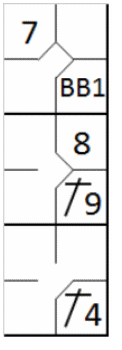
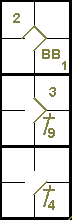
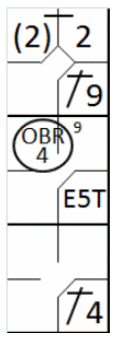

Advance to first base on the ball hitting a runner or umpire.
The batter becomes a runner and is entitled to first base without liability to be
put out (provided he advances to and touches first base) when … a fair ball touches an umpire or a runner on
fair territory before touching a fielder
[OBR 5.05(b)(4)].
If this happens, the ball is dead, the batter-runner is credited with a base hit, and if a runner
was hit, he is automatically called out (Out by Rule 9). Even if this is the third putout, the batter-runner is entitled
to a hit.
As the ball is dead, no runners may advance unless forced.
>
However,
if a fair ball touches an umpire after having passed a fielder other than the pitcher, or
having touched a fielder, including the pitcher, the ball is in play
[OBR 5.05(b)(4)]
Example 24:
With runners on first and third, the fair ball hit by the eighth batter in the line-up hits the second base
umpire. The ball is dead. The batter is credited with a hit (the number alongside the symbol identifies the area
where the hit occurred). Of the runners on base, only the forced runner to second base advances.
|

|
action {
batter -> BB
}
action {
batter -> 1B9
,
runner1 -> ++
}
action {
batter -> 1B4
,
runner1 -> +
}
|

|
Example 25:
With less than two out and runners on first and third, the hindmost runner is hit by a ground ball from the
third batter.
The hit runner is called out (Out by Rule 9).
The batter-runner is awarded first base on the hit.
If a run is scored as a result of this action by the unforced runner it does not count, and the player
therefore has to return to the base he occupied previously.
|

|
action {
batter -> 1B9
}
action {
batter -> E5T
,
runner1 -> + (2)
}
action {
batter -> 1B4
,
runner1 -> OBR9-4
}
|

|
ATTENTION: If a runner not touching a base is hit by an infield fly, the batter is called
out (Out by Rule 8) as well as the runner (Out by Rule 9). This is a double play.
If, on the other hand, the runner is hit by an infield fly while in contact with the base,
only the batter is declared out.
Note that in an infield fly situation the ball is live and in play, and therefore all runners may
advance at their own risk.